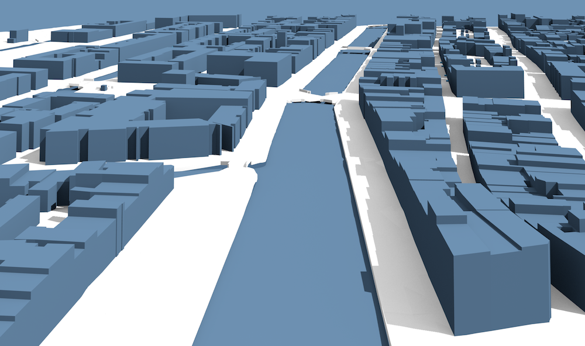

Call for papers
Third Eurographics Workshop on Urban Data Modelling and Visualisation
23 November 2015 · Delft, the Netherlands
The call for papers is also available as a
PDF.

The objective of this workshop is to discuss the modelling and visualisation of the city at various temporal and spatial scales, and aims at sharing associated techniques, methods, uses and points of view.
Managing and understanding urban data are major issues as there are represented by several kind of different data at different scales. Urban data not only embed the geometry of the city model, but also data related to human activities (e.g. social data, transportation, mobility, history), to physical phenomena (e.g. light, wind, heat), and to environment (e.g. geography, climate).
Thus, the processing of urban data is a huge challenge for current computing capabilities, especially considering all the sustainable development parameters related to architectural design, urban planning and urban climate studies; but also considering the specific needs of entertainment, cultural heritage or any domains using urban data.
After being organised in Spain in 2013 and in France in 2014 as a co-located event of the
Eurographics conference, this third workshop moves on its own to the Netherlands in autumn as a stand-alone event. It is organised at TU Delft on November 23rd 2015 by the
3D geoinformation group. Once again, we expect fruitful exchanges by the involvement of the computer graphics and the geoinformatics communities.
Contributions addressing the following topics are welcome:
- Modelling the static and dynamic features of the city (spatio-temporal data)
- Multi-scale geometric data (from building scale to urban scale)
- Multi-scale temporal data (from real time to history time)
- Visualisation of several urban data layers (aggregated indicators)
- Visual analytics using urban data (decision making processes and CAD)
Publication
Expected contributions are research papers, 6 pages in EG publication format, presenting unpublished methods, algorithms and techniques with established results.
All accepted papers will be presented orally at the conference by one of the authors, and will be published in the
EG Digital Library.
Important dates
Please refer to the right sidebar for the important dates.
Previous editions and proceedings
LaTeX template and submission
2015-07-21: The submission deadline has passed, it is not possible to submit papers anymore. We thank all the authors for their interest. However, you can still register to participate in the workshop.
Papers can be submitted on the
EG submission page.
A LaTeX template for preparing the manuscript can be found
here, or on the same page in the
Instructions section.
An accepted paper must be presented at the workshop by one of its co-authors.